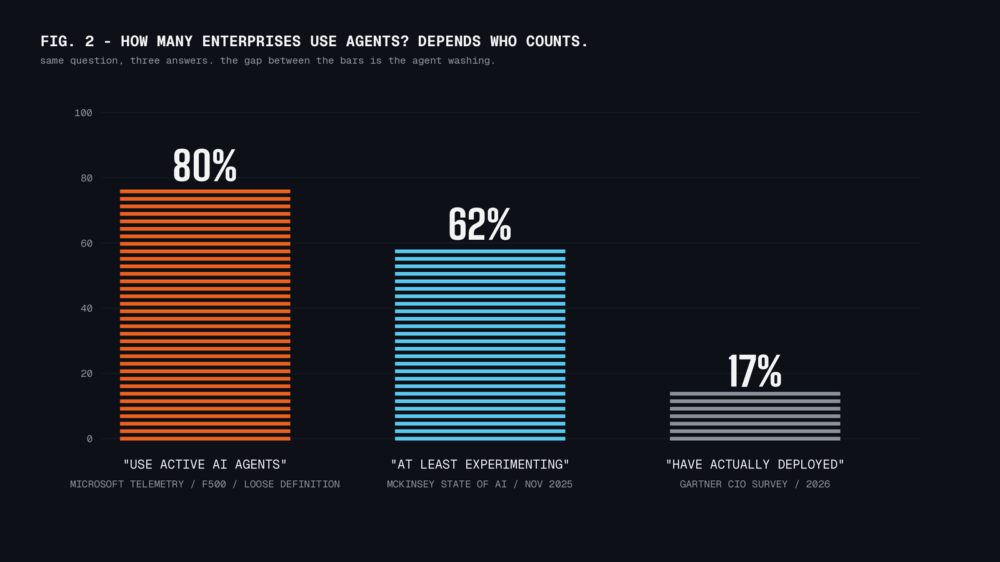

Agentic AI im Juni 2026: Eine Standortbestimmung
Was sich in diesem Monat wirklich geändert hat, was die Daten sagen und was Teams jetzt tun sollten.
Diese Woche hat ein Jahr Agentic-AI-Debatte in ungefähr 48 Stunden komprimiert. Anthropic hat Claude Fable 5 veröffentlicht, ein Modell, das explizit für lange autonome Arbeitssitzungen positioniert ist. Wenige Tage vorher ist die Diskussion "schreibt Loops, keine Prompts" endgültig aus der X-Bubble in den Engineering-Mainstream gewandert. Dazwischen: beeindruckende Demos, Herstellerzahlen und die üblichen Rückzieher.
Ein guter Zeitpunkt für eine nüchterne Standortbestimmung. Kein Hype-Text, keine Abrechnung - der Versuch, das tatsächlich Neue vom lediglich Lauteren zu trennen. Alle Quellen sind verlinkt, und es lohnt sich, die skeptischen zuerst zu lesen.
1. Modelle halten jetzt echte Langstrecken durch
Die eigentliche Schlagzeile von Claude Fable 5 ist kein Benchmark-Wert, sondern Ausdauer. Ethan Mollick, der frühen Zugang hatte, berichtet von einem 15-seitigen Designdokument, an dem das Modell "über 9 Stunden" arbeitete und "hervorragende Ergebnisse" lieferte. Andrej Karpathy nennt es einen Qualitätssprung gerade bei "langen Problemlösungssitzungen an sehr schwierigen Problemen" - und ergänzt bemerkenswert ehrlich, es habe sich noch nie so verlockend angefühlt, gar nicht mehr in den Code zu schauen, "but don't do this in prod!".
Anthropic selbst spricht davon, das Modell könne in einem Agent-Harness "tagelang" arbeiten. Das ist eine Herstelleraussage und sollte auch so behandelt werden. Die Richtung deckt sich allerdings mit unabhängigen Messungen: METR beobachtet, dass sich die Länge autonom lösbarer Aufgaben zuletzt etwa alle drei Monate verdoppelt hat.
Die praktische Konsequenz für Teams: Die Engstelle verschiebt sich von "Kann das Modell die Aufgabe?" zu "Kann unser Workflow ein System verkraften, das stundenlang unbeaufsichtigt arbeitet?". Das sind zwei sehr verschiedene Engineering-Probleme. Beim zweiten geht es um Berechtigungen, Checkpoints, Nachweise und Review-Kapazität - nicht um Prompting.
2. Der Loop hat den Prompt als Arbeitseinheit abgelöst
Boris Cherny, der Schöpfer von Claude Code, beschreibt seinen Arbeitsalltag inzwischen so: "I don't prompt Claude anymore. I have loops that are running. They're the ones that are prompting Claude and figuring out what to do. My job is to write loops." Addy Osmani hat das Muster unter dem Namen "Loop Engineering" sauber aufgeschrieben.
Ohne den Neuheitslack ist die nützliche Definition klein:
Ein Loop ist ein begrenztes Feedback-System: versuchen, prüfen, dann wiederholen, eskalieren oder stoppen - mit Budget und einem benannten Grund für das Stoppen.
Das Muster ist inzwischen Produkt: Claude Code liefert /loop und /goal, GitHub Copilot ein /fleet-Kommando für parallele Sub-Agenten, Cursor betreibt Cloud-Agenten in isolierten VMs. Vom Blogpost zur Standardausstattung in ungefähr sechs Monaten.
In der öffentlichen Diskussion werden dabei zwei Dinge vermischt, deren Trennung den Unterschied macht: Ein Loop, der einen Agenten beschäftigt hält, ist schnell gebaut. Ein Loop, der einen verlässlichen Grund hat aufzuhören, ist die eigentliche Arbeit. Das eine ist eine Demo. Das andere ist ein System, das man in einem Review verteidigen kann.
3. Verifikation ist der neue Engpass
Der nützlichste skeptische Text der Woche kam von AlphaSignal: "Generation was never the bottleneck, and loops make that obvious." Dem ist wenig hinzuzufügen, und die Daten stützen es:
- KI-gestützte Pull Requests warten 4,6- bis 5,3-mal länger auf einen Reviewer - die Generierung hat skaliert, das Review nicht.
- Der DORA-Report 2025 stellt fest: KI erhöht Durchsatz und Instabilität gleichzeitig. "AI doesn't fix a team; it amplifies what's already there."
- Osmani warnt vor "comprehension debt": dem wachsenden Abstand zwischen dem, was im Repository steht, und dem, was das Team versteht.
Ein Loop ohne Verifier ist nur ein Agent, der sich selbst teuer zustimmt. Der Verifier - Tests, Typprüfungen, deterministische Gates, ein getrennter Review-Agent, ein Mensch am richtigen Eskalationspunkt - entscheidet über den Wert der gesamten Konstruktion. Wer dieses Jahr nur in eine Sache investiert, sollte hier investieren.
4. Die Adoptionslücke ist real - und lehrreich
Je nachdem, wer zählt, liegt die Agent-Adoption in Unternehmen bei 80, 62 oder 17 Prozent.

Microsofts Telemetrie zählt auch Low-Code-Assistenten mit und kommt auf 80 Prozent der Fortune 500. McKinsey findet 62 Prozent, die "mindestens experimentieren". Gartners CIO-Umfrage kommt auf 17 Prozent mit tatsächlich produktiven Agenten. Gartner hat dafür den Begriff "Agent Washing" geprägt - nach der Schätzung, dass von tausenden selbsterklärten Agentic-Anbietern nur etwa 130 das Etikett verdienen - und erwartet, dass über 40 Prozent der Agentic-Projekte bis Ende 2027 eingestellt werden.
Auf Entwicklerseite dasselbe Bild: Stack Overflow zählt 84 Prozent, die KI-Tools nutzen oder planen - aber nur 14,1 Prozent, die täglich mit Agenten arbeiten. JetBrains findet 85 Prozent KI-Nutzung, aber nur 44 Prozent, die sie als wirklich integriert bezeichnen.
Diese Lücke ist kein Scheitern. Sie ist die normale Absorptionskurve einer Technologie, deren Best Practices sich derzeit alle paar Monate neu schreiben. Die 14 Prozent bilden sich ihre Ergebnisse nicht ein, und die Zurückhaltenden sind nicht irrational - sie reagieren auf reale Review-Kosten und reale Instabilität. Der praktische Umgang damit: die Befunde der Skeptiker als Designanforderungen behandeln, nicht als Hindernisse.
5. Zugangsökonomie wird Teil der Architekturdiskussion
Drei Datenpunkte aus den letzten zehn Tagen, die zusammengehören:
- Fable 5 kostet das Doppelte des bisherigen Flaggschiffs, ist nur bis zum 22. Juni in den Abos enthalten und bringt Safety-Klassifizierer mit, die Anfragen auf ein kleineres Modell umleiten können.
- Uber hat die Ausgaben für Agentic-Tools auf 1.500 Dollar pro Engineer und Monat gedeckelt, nachdem das Jahresbudget nach vier Monaten aufgebraucht war.
- Klarnas CEO Sebastian Siemiatkowski hat nach dem berühmten KI-Umbau des Supports öffentlich eingeordnet: "As cost unfortunately seems to have been a too predominant evaluation factor... what you end up having is lower quality." Respekt für die ehrliche Korrektur - die KI beantwortet weiterhin die meisten Chats, aber der Weg zum Menschen ist zurück.
Die Lektion ist dreimal dieselbe: Modellzugang, Modellkosten und Modell-Routing sind jetzt Architekturabhängigkeiten. Sie gehören geplant wie Cloud-Region-Ausfälle - mit Fallbacks, Budgets und einer expliziten Antwort auf die Frage, was passiert, wenn das gute Modell nicht verfügbar oder nicht bezahlbar ist.
Was ich Teams für dieses Quartal empfehlen würde
- Einen wiederkehrenden, prüfbaren Workflow auswählen. Kein Moonshot. Etwas, das wöchentlich anfällt und eine nachprüfbare Definition von "fertig" hat.
- Den Loop-Vertrag vor dem Loop schreiben. Ziel, erlaubter Scope, Checks, Budget, Stop-Bedingungen, Eskalationspfad. Wer diese Punkte nicht benennen kann, braucht zuerst eine menschliche Entscheidung, keinen Agenten.
- Deterministische Verifikation auf den kritischen Pfad legen. Tests, Typprüfungen, Linting, Screenshot-Vergleiche - Signale, an denen sich das Modell nicht vorbeireden kann.
- Review-Last messen, nicht nur Generierungsgeschwindigkeit. Wächst die PR-Wartezeit schneller als der Durchsatz, sammelt sich Risiko an, keine Velocity.
- Tokens wie Cloud-Kosten budgetieren. Limits, Alerts und Abrechnung pro Workflow ab Tag eins. Ubers Erfahrung ist der Normalfall, nicht die Ausnahme.
- Die Spur aufheben. Agentenarbeit sollte Belege hinterlassen, die ein Reviewer in Minuten prüfen kann. Wenn Review Archäologie ist, ist der Loop nicht fertig.
Risiken und Grenzen
Drei Dinge, die ich genau beobachten würde. Erstens Governance-Reife: Laut Deloitte haben nur 21 Prozent der Organisationen eine ausgereifte Agent-Governance, während 75 Prozent agentische Deployments planen - in dieser Lücke entstehen die Vorfälle. Zweitens Comprehension Debt: Code auszuliefern, den niemand im Team versteht, ist eine Verbindlichkeit mit Zeitverzögerung. Drittens Zahlenhygiene: Die meisten Benchmark- und ROI-Zahlen in diesem Feld stammen von Herstellern. Herstellerzahlen sind Herstellerzahlen - auch die in den Quellen dieses Artikels.
Das Fazit
Der Fähigkeitssprung ist real. Das Tooling ist real. Die Adoptionslücke ist real. Das widerspricht sich nicht - es beschreibt eine Technologie mitten in der Absorption. Die Aufgabe ist gerade nicht, den Endzustand vorherzusagen, sondern Workflows zu bauen, die in jede Richtung der nächsten hundert Tage tragen.
Mich interessiert der Vergleich: Welcher Workflow war der erste, den Sie einem Agenten anvertraut haben - und was hat das Vertrauen gerechtfertigt?
Quellen / weiterführende Lektüre
- Anthropic: Introducing Claude Fable 5 and Claude Mythos 5
- Simon Willison: Initial impressions of Claude Fable 5
- Addy Osmani: Loop Engineering
- AlphaSignal: Most Developers Do Not Need Agent Loops Yet
- METR: Time Horizon 1.1
- DORA: State of AI-assisted Software Development 2025
- Stack Overflow: 2025 Developer Survey, AI-Sektion · JetBrains: State of Developer Ecosystem 2025
- Gartner: Agentic-AI-Projektabbrüche · McKinsey: The State of AI · Microsoft: Fortune-500-Telemetrie · Deloitte: State of AI 2026
- Bloomberg: Uber deckelt KI-Tool-Nutzung · Fortune: Klarnas Korrektur
- Engineering-Leadership-Daten: Code review is the new bottleneck